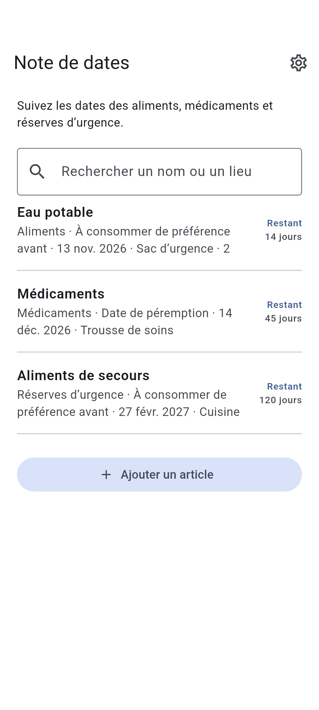

DOTNULL / Note de dates
Les dates en un coup d’œil.
Suivez les dates des aliments, médicaments et réserves d’urgence.
Application en cours de développement.
À propos ↓
HOW IT WORKS
À propos
01
Ajoutez un nom et une date
02
Choisissez le type de date
03
Consultez les dates les plus proches
À propos
- Catégorie
- Aliments · Médicaments · Réserves d’urgence · Autre
- Lieu de stockage (facultatif)
- Rechercher un nom ou un lieu
- Type de date
- À consommer de préférence avant · À consommer jusqu’au · Date de péremption
- Rappels de date
- Rappels vers 9 h, 3 mois et 1 mois avant et le jour même. Une autorisation est requise. Les 60 prochaines dates sont programmées ; ouvrez régulièrement l’application pour les actualiser.
Confidentialité
Les données sont stockées sur l’appareil et consultables hors ligne.
Les données peuvent être perdues si l’application est supprimée ou l’appareil tombe en panne.
Vos articles sont stockés sur cet appareil. Le fournisseur de publicité peut utiliser des données.
Vérifiez la date indiquée sur chaque produit.